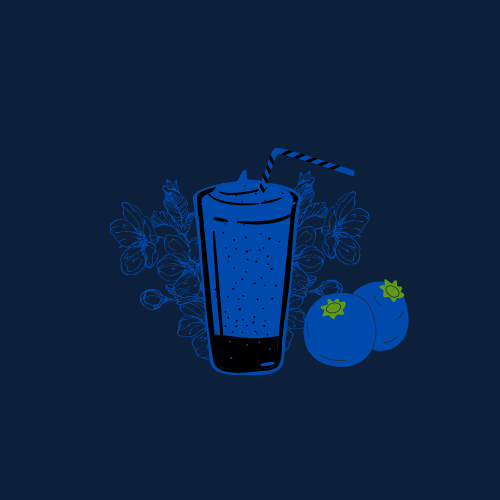

BLUEBERRY MILK TEA
Ingredients:
1 cup water
1-2 teaspoons black tea leaves (or 1-2 tea bags)
1/2 cup fresh or frozen blueberries
1 tablespoon sugar (adjust to taste)
1 cup milk (dairy or plant-based)
Ice cubes (optional, for serving cold)
PROCEDURE
Make Blueberry Syrup:
In a small saucepan, combine the blueberries and sugar with
a small amount of water (about 2 tablespoons). Heat over medium until
the blueberries start to break down and form a syrup, about 5-7 minutes.
You can mash the berries to release more flavor.
Boil Water and Steep Tea:
Meanwhile, bring 1 cup of water to a boil. Add the tea leaves and
steep for about 3-5 minutes. Remove the tea leaves or bags.
Combine Tea and Blueberry Syrup:
Strain the blueberry syrup to remove the
solids and mix the syrup with the brewed tea.
Add Milk:
Add the milk to the blueberry tea mixture. You can adjust
the amount of milk based on your preference for creaminess.
Serve:
For hot blueberry milk tea, serve as is. For an iced version,
let the mixture cool slightly, then pour over ice in a glass.